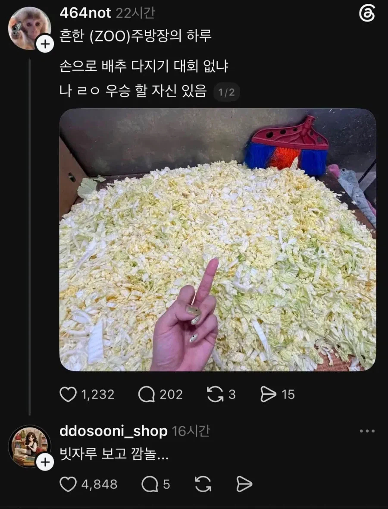
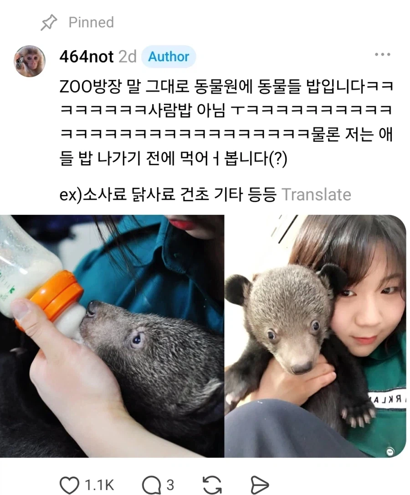

ZOO 방장 맞네 ㅋㅋㅋㅋㅋㅋㅋㅋㅋ
애기들 주는거라서 다져주는건가
애기들이니까 다져줘야지 이기면 안대
난 상대가 어린이라도 항상 최선을 다해
그런식으로 설렁설렁해서 애들이 승부에 대해 뭘 배우겠어?
아이디 464not ㅋㅋ 사육사 아님
해학의 민족 ㅋㅋㅋㅋ
464 not food
손톱이 조리사 손이 아닌데? 싶었는데 사육사였구나
업소용 다지기라도 하나 사주지 손목 아작나겠다
zoo 방장 ㅋㅋㅋㅋ